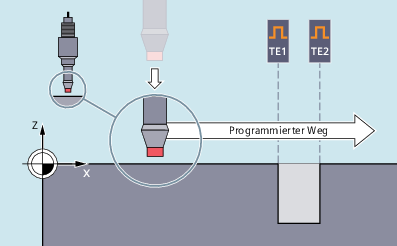
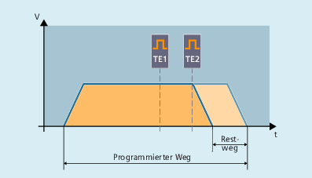
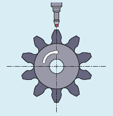

Mit MEASA bzw. MEAWA werden für die jeweils programmierte Achse bis zu vier Messwerte pro Messung erfasst und die Messergebnisse in Systemvariablen abgelegt.
Die Wirkungsweise von MEASA/MEAWA soll folgende Abbildung veranschaulichen:
MEASA bzw. MEAWA wird in diesem Beispiel eingesetzt, um für die x-Achse entlang eines programmierten Verfahrwegs die Positionen eines Bohrlochs zu messen. Die dafür nötigen zwei Trigger-Ereignisse TE1 und TE2 werden im Modus "nacheinander in der programmierten Reihenfolge" ausgewertet. Als Messtaster ist ein berührungslos schaltender Messtaster im Einsatz (z. B. induktiver Messtaster).
Bei Anwendung der Funktionsvariante "Messen mit Restweglöschen (MEASA)" wird die Achsbewegung nach Eintreffen aller programmierten Trigger-Ereignisse gebremst:
Für spezielle Messaufgaben, bei denen in jedem Fall die programmierte Position angefahren werden soll, wird MEAWA eingesetzt.
| Hinweis |
MEASA ist nicht in Synchronaktionen programmierbar. Ersatzweise kann MEAWA plus Restweglöschen als Synchronaktion programmiert werden. Wird der Messauftrag mit MEAWA aus den Synchronaktionen gestartet, sind die Messwerte nur im Maschinen-Koordinatensystem verfügbar. |
Die Messtaster-Messwerte für MEASA/MEAWA sind über die folgenden Systemvariablen im Teileprogramm und in Synchronaktionen lesbar:
Systemvariable | Bedeutung |
|---|---|
$AA_MM1[<Axis>] ... $AA_MM4[<Axis>] | Messtaster-Messwert bei Trigger-Ereignis 1 im MKS ... Messtaster-Messwert bei Trigger-Ereignis 4 im MKS |
$AA_MW1[<Axis>] ... $AA_MW4[<Axis>] | Messtaster-Messwert bei Trigger-Ereignis 1 im WKS ... Messtaster-Messwert bei Trigger-Ereignis 4 im WKS |
Wird der Messauftrag mit zwei Messsystemen durchgeführt, wird jedes der beiden möglichen Trigger-Ereignisse von beiden Messsystemen erfasst.
Die Belegung der Systemvariablen ist dann wie folgt:
Systemvariable | Bedeutung |
|---|---|
$AA_MM1[<Axis>] bzw. $AA_MW1[<Axis>] | Messwert von Messsystem 1 bei Trigger-Ereignis 1 |
$AA_MM2[<Axis>] bzw. $AA_MW2[<Axis>] | Messwert von Messsystem 2 bei Trigger-Ereignis 1 |
$AA_MM3[<Axis>] bzw. $AA_MW3[<Axis>] | Messwert von Messsystem 1 bei Trigger-Ereignis 2 |
$AA_MM4[<Axis>] bzw. $AA_MW4[<Axis>] | Messwert von Messsystem 2 bei Trigger-Ereignis 2 |
Beim kontinuierlichen Messen (MEAC) werden die programmierten Trigger-Ereignisse nach jedem Eintreffen erneut aktiviert. Das Ergebnis ist eine sich zyklisch wiederholende Schaltflankenprogrammierung und -auswertung.
Die Messwerte liegen bei MEAC im Maschinenkoordinatensystem vor und werden im angegebenen FIFO[<n>]-Speicher abgelegt. Sind für die Messung zwei Messtaster projektiert, werden die Messwerte des zweiten Messtasters getrennt im zusätzlich dafür projektierten FIFO[<n>+1]-Speicher abgelegt.
Der FIFO-Speicher ist ein Umlaufspeicher, in den Messwerte im Umlaufprinzip in $AC_FIFO-Variablen eingetragen werden. Der Inhalt kann nur einmal aus dem Umlaufspeicher ausgelesen werden. Zur Mehrfachverwendung der Messdaten müssen diese in den Anwenderdaten zwischengespeichert werden.
Überschreitet die Anzahl der Messwerte für den FIFO-Speicher den über Maschinendatum festgelegten Höchstwert, wird die Messung automatisch beendet.
Endloses Messen lässt sich durch zyklisches Auslesen von Messwerten realisieren. Das Auslesen muss dabei mindestens in der gleichen Häufigkeit wie der Eingang von neuen Messwerten erfolgen.
Ein typisches Anwendungsbeispiel für MEAC ist das Messen verzahnter Werkstücke:
Weitere Informationen: Funktionshandbuch Synchronaktionen
Der Vorschub ist dem jeweiligen Messproblem anzupassen. Der zulässige Vorschub hängt von der Anzahl programmierter Trigger-Ereignisse und dem Verhältnis vom Interpolatortakt zum Lagereglertakt ab.
Bei MEASA und MEAWA können korrekte Ergebnisse nur bei Vorschüben gewährleistet werden, bei denen nicht mehr als ein gleiches und nicht mehr als 4 verschiedene Trigger-Ereignisse pro Lagereglertakt eintreffen.
Beim kontinuierlichen Messen mit MEAC darf das Verhältnis zwischen Interpolatortakt und Lagereglertakt nicht größer als 1:8 werden.
Bei der Verwendung von PROFIBUS-Telegramm 391 (Standardeinstellung für die PROFIBUS-Kommunikation) ist nur ein Messwert pro Trigger-Ereignis und Lagereglertakt möglich.
Bei der Verwendung von PROFIBUS-Telegramm 395 kann bei MEAC im Messmodus 1 die Anzahl der Messwerte pro Trigger-Ereignis und Lagereglertakt wie folgt erhöht werden:
Ein Messtaster: 8 Messwerte bei steigender und 8 bei fallender Flanke
Zwei Messtaster: 4 Messwerte bei steigender und 4 bei fallender Flanke je Messtaster
Dadurch lassen sich höhere Vorschübe oder Drehzahlen realisieren.
Ist im Programm eine Auswertung erforderlich, ob ein Messtaster ausgelenkt wurde bzw. geschaltet hat, kann der Status über folgende Systemvariablen abgefragt werden:
Systemvariable | Bedeutung | Datentyp | Wert | Bedeutung |
|---|---|---|---|---|
$A_PROBE[<n>] | Auslenkungszustand des Messtasters | INT | 0 | Messtaster nicht ausgelenkt. |
1 | Messtaster ausgelenkt. | |||
$AC_MEA[<n>] | Schaltzustand des Messtasters $AC_MEA[<n>] wird zu Beginn einer Messung automatisch zurückgesetzt. | INT | 0 | Messtaster hat nicht geschaltet. |
1 | Messtaster hat geschaltet (alle im Messsatz programmierten Trigger-Ereignisse sind erfolgt). |
| Hinweis |
Wird Messen aus Synchronaktionen gestartet, wird $AC_MEA nicht mehr aktualisiert. In diesem Fall ist das NC/PLC-Nahtstellensignal $AA_MEAACT==1: Messen aktiv $AA_MEAACT==0: Messen nicht aktiv |
Mit der Systemvariablen $A_PROBE_LIMITED kann im NC-Programm oder in Synchronaktionen der Status der Messtasterbegrenzung bei Verwendung des PROFIBUS-Telegramms 395 gelesen werden:
$A_PROBE_LIMITED[<n>] == 0: Messtasterbegrenzung inaktiv/zurückgesetzt
$A_PROBE_LIMITED[<n>] == 1: Messtasterbegrenzung aktiv
<n> = Messtasternummer
Folgende Fehlprogrammierungen werden erkannt und mit einem Fehler angezeigt:
Beschreibung | Beispiel |
|---|---|
MEASA/MEAWA zusammen mit MEAS/MEAW in einem Satz |
|
MEASA/MEAWA mit Parameteranzahl <2 oder >5 |
|
MEASA/MEAWA mit Trigger-Ereignis ungleich 1/ -1/ 2/ -2 |
|
MEASA/MEAWA mit falschem Modus |
|
MEASA/MEAWA mit Messmodus 1 und doppelt programmiertem Trigger-Ereignis |
|
MEASA/MEAWA und fehlende Geometrieachse |
|
Uneinheitlicher Messauftrag bei Geometrieachsen |
|
Basic Program Plus | Basic Program | |
|---|---|---|
<Axis>.basic.in.measurementActive | LBP_Axis*.E_MeasAct | DB31, … .DBX62.3 |